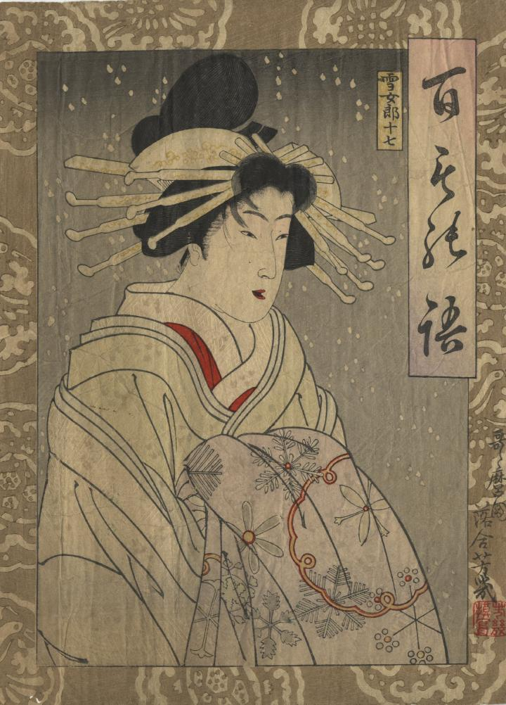

雪女郎が立っている。雪が降っている。白い着物の下に赤い襦袢が見える。雪輪文や雪華文などの雪の文様が入った着物を手に持っている。襟の部分の紗綾形の綸子など、空刷り（紙に凹凸文様をつける）がされている。
著作者：落合芳幾／出典：親書誌：U426_nichibunken_0419：百もの語 雪女郎；ヒャクモノガタリ ユキジョロウ／日付：2015／資源識別子：U426_nichibunken_0419_0001_0000
Copyright (c)2010- International Research Center for Japanese Studies, Kyoto, Japan. All rights reserved.